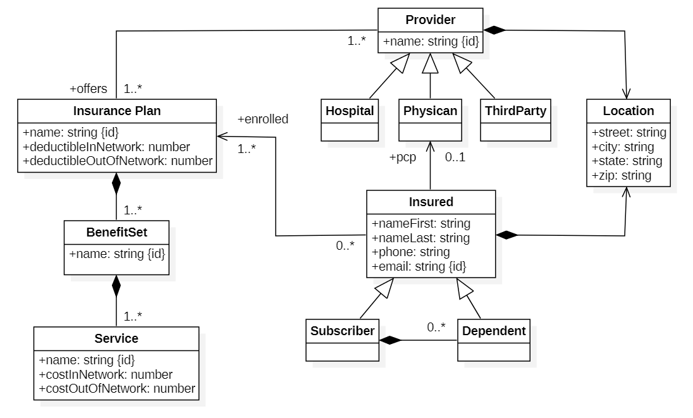

Business Domain Model
A business domain model is a structured diagram of the real-world concepts in a business - things, their properties, and how they relate. It captures nouns (e.g., Customer, Order, Invoice), key attributes (e.g., Order:total), and relationships (e.g., Customer places Order) using the business's own language. It's technology-agnostic that focuses on business concepts, not implementation.
A domain model is not a database schema or data model; it is a conceptual representation of the business domain. In contrast a database model is storage-oriented (tables, indexes). One domain concept can map to many database tables or vice versa. Likewise, a domain model is not a technical specification or a detailed design document. Rather it helps align stakeholders, developers, and analysts on the core concepts and relationships in the business. The domain model serves as a foundation for communication, analysis, and design throughout the API development lifecycle.
Creating a business domain model involves collaboration between business stakeholders, domain experts, and developers. The process includes:

The diagram illustrates the following key concepts:See David Biesack's article for more information on building business domain models. It highlights several key aspects of using business domain models as the foundation for API design. Likewise, the Medium platform has published a good article discussing using business domain modeling and Domain-Driven Design (DDD) techniques to create coherent and composable business resource APIs.